[1] "Edad: 18 | Sexo: Mujer | Región: Lima"
[2] "Edad: 22 | Sexo: Hombre | Región: Lima"
[3] "Edad: 25 | Sexo: Mujer | Región: Lima"
[4] "Edad: 29 | Sexo: Hombre | Región: Lima"
[5] "Edad: 31 | Sexo: Mujer | Región: Lima"
[6] "Edad: 34 | Sexo: Hombre | Región: Cusco"
[7] "Edad: 37 | Sexo: Mujer | Región: Cusco"
[8] "Edad: 41 | Sexo: Hombre | Región: Cusco"
[9] "Edad: 45 | Sexo: Mujer | Región: Piura"
[10] "Edad: 48 | Sexo: Hombre | Región: Piura"
[11] "Edad: 52 | Sexo: Mujer | Región: Piura"
[12] "Edad: 56 | Sexo: Hombre | Región: Piura"
[13] "Edad: 60 | Sexo: Mujer | Región: Arequipa"
[14] "Edad: 63 | Sexo: Hombre | Región: Arequipa"
[15] "Edad: 67 | Sexo: Mujer | Región: Arequipa" Semana 1: Conceptos básicos de estadística e introducción a R
1.1 ¿Qué es la estadística?
La estadística tiene una presencia constante en nuestra vida, aunque rara vez le prestemos atención.
Está en las decisiones que tomamos, en las recomendaciones que recibimos y en cómo entendemos el mundo que nos rodea.
Hoy existimos inmersos en datos: cada visita al médico, cada interacción en línea o compra registrada por un dispositivo móvil produce información que alimenta sistemas sobre quiénes somos y qué deseamos. Este flujo constante de datos ha hecho que la estadística sea una herramienta poderosa en varios campos de nuestra sociedad.
De Agresti (2023):
La base de la estadística es la capacidad de recolectar, organizar, analizar, interpretar y presentar datos. La Ciencia Estadística es un conjunto metódico de herramientas y técnicas que nos permite no solo recolectar datos, sino también analizarlos con profundidad e inferir conclusiones significativas
1.2 Los datos
Los datos son nuestra principal fuente de información. Son mediciones, observaciones o registros recopilados para analizar y comprender fenómenos específicos. Por ejemplo, el número de personas en Perú, los departamentos donde nacieron, el nivel de educación en una población, o la relación entre la tasa de empleo y la educación, son todos ejemplos de datos.
Sin datos, nuestra capacidad para explorar, describir e interpretar la realidad sería limitada. Estos son la clave para transformar preguntas en respuestas y evidencia en conocimiento.
Los datos se generan a partir de mediciones realizadas sobre individuos, grupos, o eventos. Estos pueden recopilarse mediante encuestas, censos, observaciones directas, registros administrativos o experimentos.
Debemos tener claro la diferencia entre unidad de observación, observación y variable:
Unidad de observación: Es la entidad sobre la que se recopilan los datos, como una persona, un hogar, una empresa, o una región.
- Ejemplo: Cada votante en una elección sería una unidad de observación.
Observación: Es un conjunto específico de valores medidos o registrados para una unidad de observación. Generalmente, cada observación corresponde a una fila en un conjunto de datos tabular.
- Ejemplo: La información de un votante, incluyendo su edad, género y su preferencia electoral, sería una observación.
Variable: Es una característica o atributo medido sobre las unidades de datos. Cada columna en un conjunto de datos representa una variable.
- Ejemplo: “Edad”, “Nivel educativo” y “Preferencia electoral” son variables.
Un conjunto de datos es una colección organizada de todas las observaciones recolectadas. Por lo general, se presenta en formato tabular, donde las filas representan las observaciones y las columnas representan las variables.

1.3 Variables y variabilidad
Las variables representan las características o propiedades de los elementos que se están estudiando. Por ejemplo, en un estudio sobre comportamiento electoral, cada persona observada presenta características distintas.
La edad, el nivel educativo o la preferencia política no toman un único valor, sino que varían entre individuos.
A estas características se les denomina variables, precisamente porque su valor no es fijo, sino que cambia de una observación a otra.
Un gráfico nos permite observar cómo se distribuyen los valores de una variable y detectar posibles diferencias o patrones en su variación.
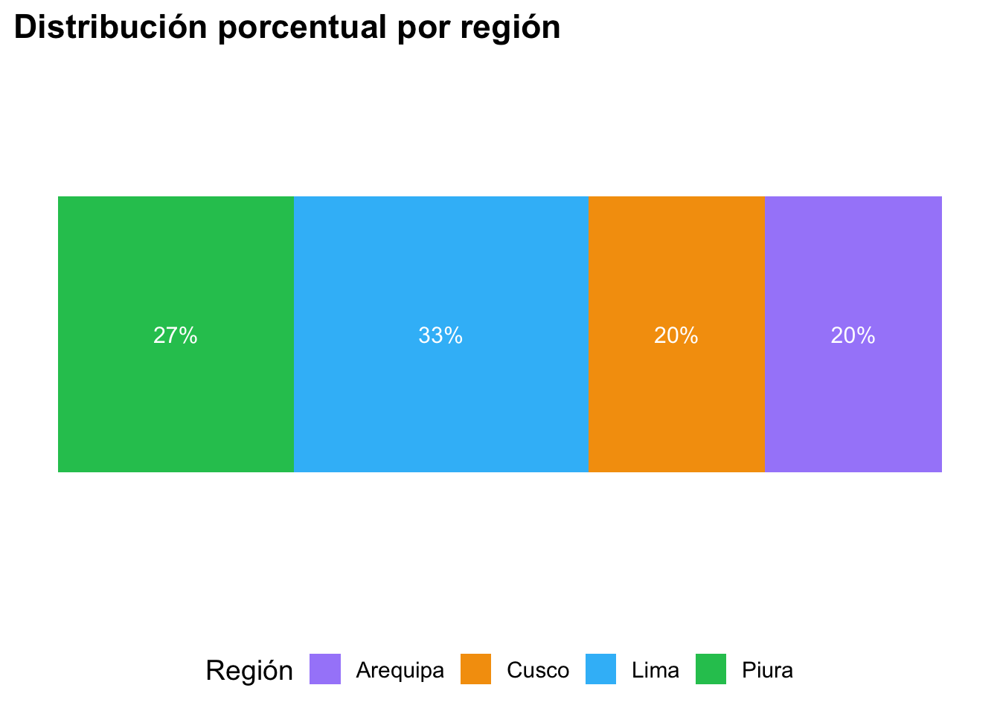
1.4 Tipos de variables
Es importante tener en cuenta que no todas las características son medidas de la misma forma. Los datos recolectados pueden ser de diferentes tipos, lo cual influye en cómo se analizan e interpretan. Los dos tipos principales de datos son:
numéricos
[1] 18 22 25 29 31 34 37 41 45 48 52 56 60 63 67categóricos
[1] "Lima" "Lima" "Lima" "Lima" "Lima" "Cusco" [7] "Cusco" "Cusco" "Piura" "Piura" "Piura" "Piura" [13] "Arequipa" "Arequipa" "Arequipa"
Variables Numéricas
Los datos numéricos se refieren a cualquier tipo de información que puede ser medida y expresada en números. Estos datos pueden ser manipulados matemáticamente y se dividen en dos subcategorías:
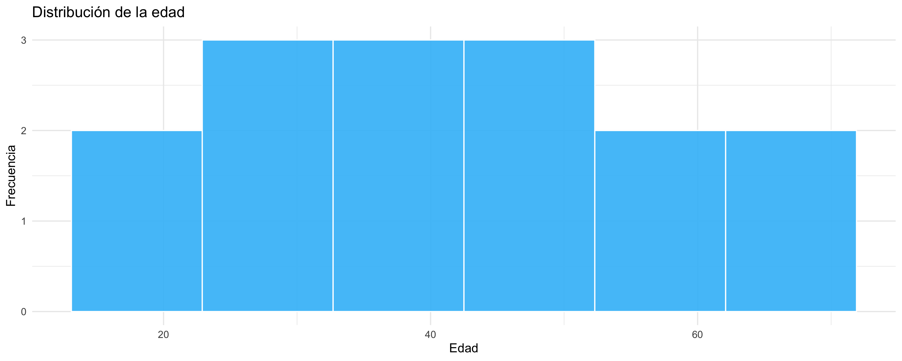
Varibles Continuas: Pueden tomar cualquier valor dentro de un rango continuo. Estos datos no están restringidos a valores enteros y pueden incluir fracciones y decimales. Por ejemplo:
Ingreso mensual de un hogar: El ingreso puede variar desde cero hasta cualquier cantidad máxima, sin limitaciones específicas. Puede ser 2000.50, 3000.75, etc.
Tiempo dedicado a ver televisión por semana: Este tiempo puede ser fraccionado en minutos y segundos, variando de forma continua. Por ejemplo, 5.5 horas, 10.25 horas, etc.
Varibles Discretas: Toman valores específicos y separados. Estos datos son contables y no pueden ser fraccionados. Por ejemplo:
Número de votantes en una elección: Se cuenta en números enteros (1000, 2000, etc.).
Conteo de delitos en una ciudad: El número de incidentes reportados se registra en valores enteros como 150, 300, etc.
Varibles Categóricas
Los datos categóricos se refieren a información que puede ser dividida en grupos distintos, cada uno de los cuales representa una categoría o una cualidad diferente. Estos datos no tienen un valor numérico intrínseco y se dividen en tres subcategorías:

Varibles Nominales: No tienen un orden intrínseco. Estos datos representan categorías sin un orden específico. Por ejemplo:
Nacionalidad: Perú, Colombia, Venezuela.
Preferencias políticas: Liberal, conservador, independiente.
Varibles Binaria: Estos datos pueden ser tratados como casos especiales de las variables nominales. Solo pueden tomar uno de dos valores posibles. También llamados variables dicotómicas, representando una de dos categorías opuestas. Por ejemplo:
0/1: Presencia o ausencia de una característica.
Sí/No: Respuesta a una pregunta específica.
Verdadero/Falso: Estado de una condición.
Varibles Ordinales: Tienen un orden o jerarquía implícita. Aunque las categorías son ordenadas, la diferencia entre ellas no necesariamente es igual. Por ejemplo:
Escala de satisfacción con el gobierno: Muy insatisfecho, insatisfecho, neutral, satisfecho, muy satisfecho.
Nivel de educación: Primaria, secundaria, universidad, posgrado.
1.5 Descripción de datos
La estadística descriptiva se encarga de resumir y describir las características principales de un conjunto de datos. Al trabajar con bases de datos, estas pueden contener cientos o incluso miles de observaciones, es necesaria una forma de poder condensar esta información en un formato más comprensible y manejable. Para ello, hacemos uso de herramientas como tablas, gráficos y medidas descriptivas.
Tomemos como ejemplo a este conjuntos de datos:
edad sexo region educacion ocupacion
1 18 Mujer Lima Secundaria Ocupado
2 22 Hombre Lima Universitaria Ocupado
3 25 Mujer Cusco Universitaria Estudiante
4 29 Hombre Cusco Técnica Ocupado
5 31 Mujer Arequipa Universitaria Ocupado
6 34 Hombre Arequipa Técnica Ocupado
7 37 Mujer Piura Secundaria Desocupado
8 41 Hombre Piura Universitaria Ocupado
9 45 Mujer Lima Universitaria Ocupado
10 48 Hombre Lima Técnica Ocupado
11 52 Mujer Cusco Secundaria Desocupado
12 55 Hombre Cusco Universitaria Ocupado
13 58 Mujer Arequipa Universitaria Ocupado
14 61 Hombre Arequipa Técnica Ocupado
15 64 Mujer Piura Secundaria Desocupado
16 27 Mujer Lima Universitaria Ocupado
17 33 Hombre Cusco Técnica Ocupado
18 39 Mujer Arequipa Universitaria Ocupado
19 46 Hombre Piura Secundaria Desocupado
20 50 Mujer Lima Universitaria OcupadoGráficos: Una manera visual de entender la información. Por ejemplo, en un estudio sobre el impacto de una política educativa, podríamos usar gráficos de barras para mostrar el porcentaje de personas que apoyan o rechazan la política, o tablas para presentar la distribución de los encuestados por nivel educativo.
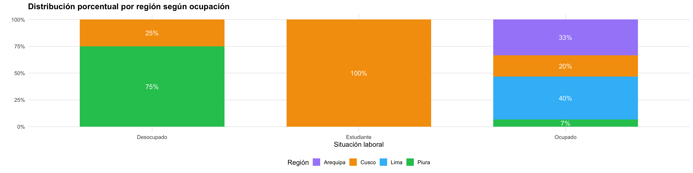
Tablas : Organizan la información de manera estructurada, permitiendo resumir los datos y facilitar su lectura. Por ejemplo, una tabla de frecuencias puede mostrar cuántas personas pertenecen a cada nivel educativo.
| sexo | ocupacion | Arequipa | Cusco | Lima | Piura |
|---|---|---|---|---|---|
| Hombre | Ocupado | 2 (22.2%) | 3 (33.3%) | 2 (22.2%) | 1 (11.1%) |
| Hombre | Desocupado | 0 (0%) | 0 (0%) | 0 (0%) | 1 (11.1%) |
| Mujer | Ocupado | 3 (27.3%) | 0 (0%) | 4 (36.4%) | 0 (0%) |
| Mujer | Desocupado | 0 (0%) | 1 (9.1%) | 0 (0%) | 2 (18.2%) |
| Mujer | Estudiante | 0 (0%) | 1 (9.1%) | 0 (0%) | 0 (0%) |
Medidas de resumen: Las medidas de resumen son valores numéricos que permiten sintetizar y describir la información contenida en una variable. Su objetivo es reducir grandes cantidades de datos a unos pocos indicadores que faciliten su interpretación.
En términos generales, las medidas de resumen pueden agruparse en tres tipos:
Medidas de tendencia central, que indican un valor representativo o típico del conjunto de datos.
Medidas de posición, que señalan la ubicación relativa de una observación dentro de la distribución.
Medidas de dispersión, que informan cuánta variabilidad existe entre los valores observados.
Dentro de las medidas de tendencia central, las más utilizadas son:
La media (o promedio), que se obtiene sumando todos los valores y dividiendo entre el número de observaciones: \[ \bar{x} = \frac{\sum x}{n} \]
La mediana, que corresponde al valor central de los datos cuando estos se ordenan de menor a mayor.
Sin embargo, conocer solo un valor central no es suficiente. Dos conjuntos de datos pueden tener la misma media o mediana, pero comportarse de manera muy distinta. Por ello, es necesario considerar también la dispersión.
Una de las medidas de dispersión más importantes es la desviación estándar, que indica, en promedio, cuánto se alejan los valores de la variable respecto a la media. Su expresión es:
\[ s = \sqrt{\frac{\sum (x_i - \bar{x})^2}{n}} \]
Cuanto mayor es la desviación estándar, mayor es la variabilidad de los datos, cuando es pequeña, los valores tienden a concentrarse alrededor de la media.
Estas medidas permiten describir el comportamiento general de una variable y comparar distribuciones.
| Medida | Descripción | Valor |
|---|---|---|
| Media | Promedio de las edades | 40.8 |
| Mediana | Valor central al ordenar las edades | 40.0 |
| Desviación estándar | Variabilidad de las edades respecto a la media | 13.4 |
1.6 Introducción al muestreo
Cuando investigamos distintos fenómenos de interés, una de las primeras preguntas que surge es cómo recolectar datos de una población amplia sin la necesidad de observar o medir a cada una de sus unidades. Esta tarea puede ser especialmente compleja en contextos donde la población es muy grande o está distribuida en espacios extensos, y donde abarcarla por completo resulta prácticamente imposible debido a limitaciones de tiempo, recursos y logística. Por ello, el muestreo se convierte en una herramienta indispensable.
El muestreo permite estudiar solo una parte de la población en lugar de examinarla en su totalidad, simplificando así el proceso de recolección de datos. La idea principal es seleccionar un grupo más pequeño, llamado muestra, que refleje adecuadamente las características de la población total.
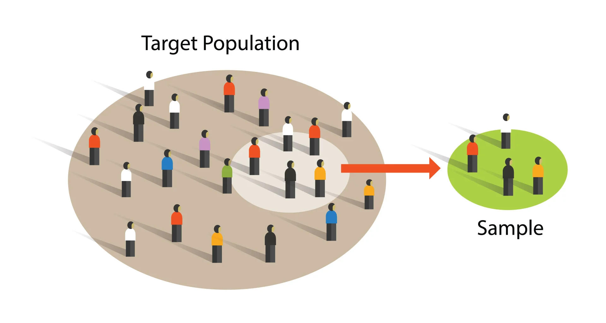
Al hablar de muestreo, es inevitable considerar la representatividad.
Si una muestra no es representativa, las conclusiones a las que lleguemos pueden estar sesgadas y no ser aplicables al conjunto de la población.
Para asegurar la representatividad, la selección de la muestra debe ser lo más imparcial posible, y aquí es donde la aleatoriedad juega un papel crucial.
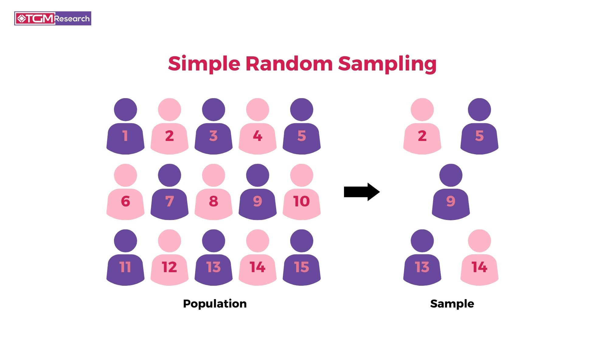
La aleatoriedad ayuda a que cada unidad de la población tenga la misma probabilidad de ser seleccionada, aumentando la posibilidad de que la muestra reproduzca las características relevantes del conjunto.
Tipos de muestreo
Una muestra será representativa si todos los sujetos de la población tienen la misma posibilidad de ser seleccionados y si el tamaño de la muestra refleja adecuadamente las características de la población en términos de la distribución de las variables estudiadas
En el muestreo probabilístico, cada individuo de la población tiene una probabilidad conocida y no nula de ser seleccionado. Esto garantiza que la muestra sea representativa y que las conclusiones puedan generalizarse a la población total.
Aleatorio simple: Cada miembro de la población tiene la misma probabilidad de ser seleccionado.
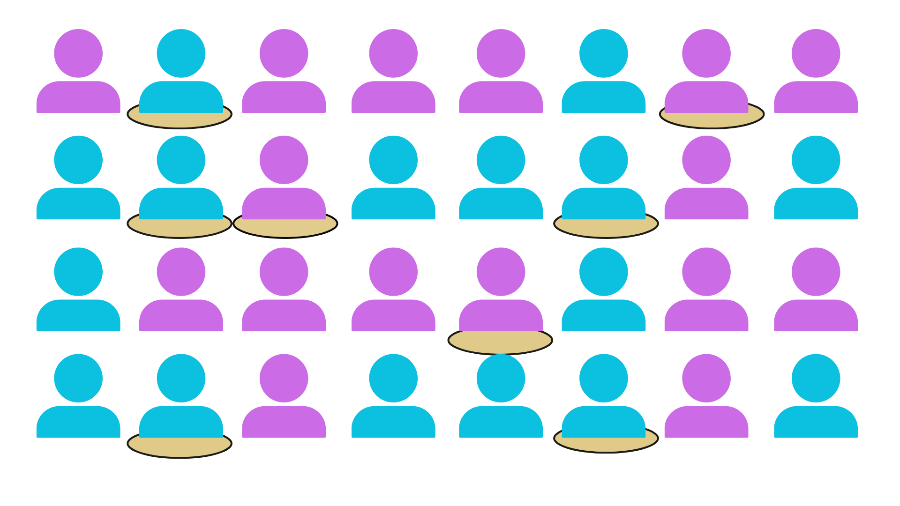
Estratificado: Se divide la población en subgrupos homogéneos o estratos (como género, edad o nivel educativo) y se selecciona una muestra aleatoria dentro de cada uno. Esto asegura que todos los estratos estén representados.
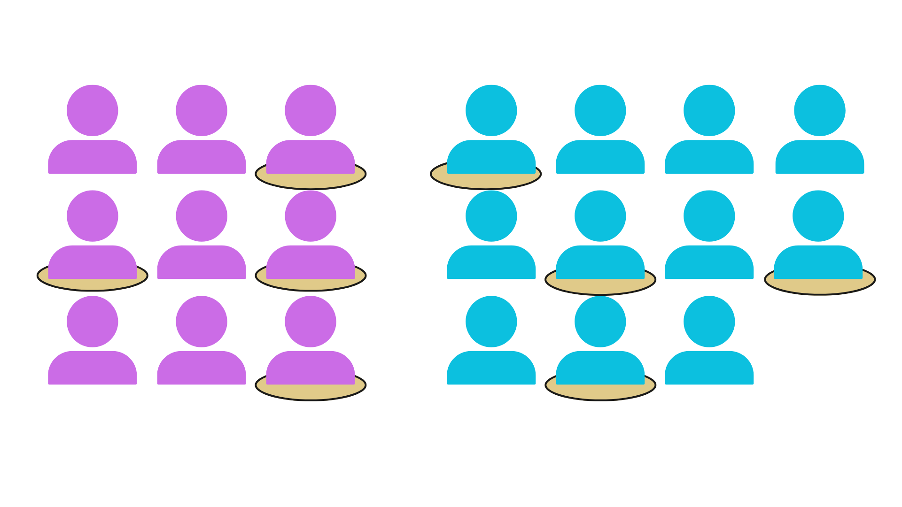
Sistemático: Se selecciona cada “k-ésimo” individuo de una lista organizada.
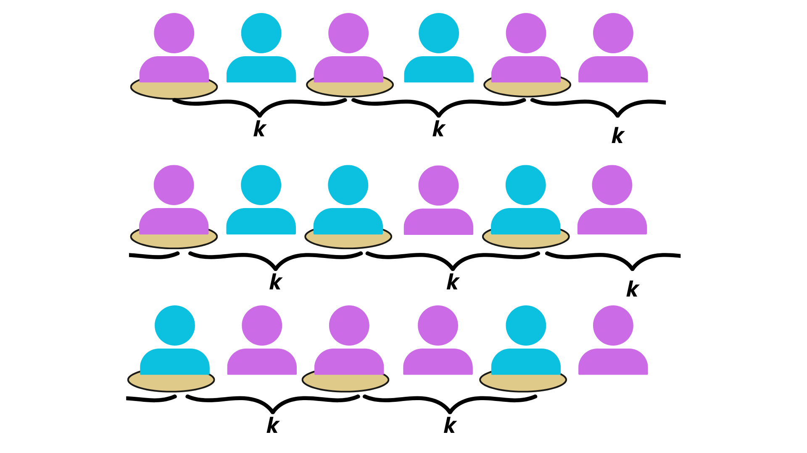
Por conglomerados: Se divide la población en grupos naturales, como barrios o comunidades, y se seleccionan algunos de estos conglomerados para estudiar a todos sus miembros.
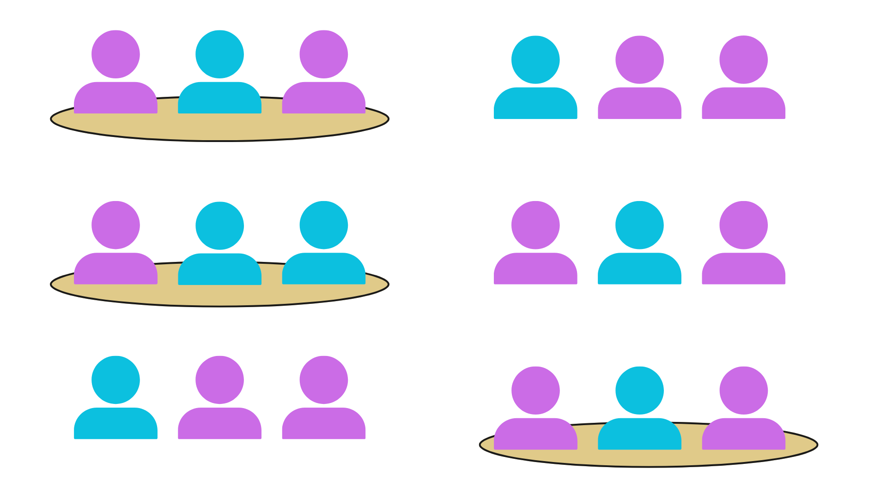
1.7 Introducción a R
R es un lenguaje de programación y un entorno de software creado específicamente para el análisis estadístico y la representación gráfica. Fue desarrollado en la década de 1990 por los estadísticos Ross Ihaka y Robert Gentleman.
El lenguaje R fue desarrollado como un esfuerzo por diseñar una herramienta que facilite la aplicación de métodos estadísticos desde básicos hasta avanzados y que sea lo suficientemente flexible para adaptarse a diversas necesidades de investigación y análisis.

Cuando decimos que R es un “lenguaje de programación”, nos referimos a que, en este sistema, los usuarios escribimos código, y es la máquina la que se encarga de ejecutar las instrucciones.
ggplot(datos, aes(x = edad)) +
geom_histogram(
bins = 6,
fill = "#38BDF8",
color = "white",
alpha = 0.9
) +
labs(
title = "Distribución de la edad",
x = "Edad",
y = "Frecuencia"
) +
theme_minimal(base_size = 20) 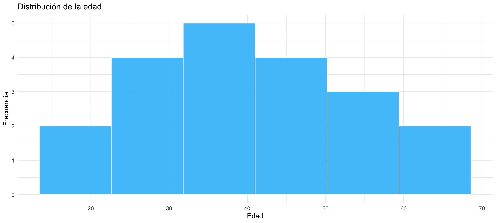
Crear y configurar tu carpeta de trabajo
Crea una carpeta específica:
- En tu dispositivo, crea una nueva carpeta para tu proyecto (por ejemplo, “MiProyectoR”). Este será el lugar donde guardarás todos los archivos relacionados.
Establece la carpeta como directorio de trabajo:
En RStudio, ve al panel Files, ubicado generalmente en la parte inferior derecha.
Puedes usar el botón New Folder para crear una nueva carpeta si aún no lo has hecho.
Navega hasta la carpeta que creaste y selecciona More > Set As Working Directory. Esto le dice a RStudio que todos los archivos guardados o abiertos estarán relacionados con esta carpeta. Verás en la consola un mensaje como:
setwd("ruta/de/tu/carpeta")Setwd viene de Set Working Directory.
Crear un archivo de script
Cuando trabajamos en R, utilizamos diferentes tipos de archivos para organizar y guardar nuestro trabajo. Dos formatos comunes son el archivo R Script y el documento Quarto. Ambos se utilizan para escribir código, pero cumplen propósitos diferentes que es importante entender.
Un archivo R Script es un archivo simple donde escribimos y guardamos nuestras instrucciones de código. Sirve como un registro de los comandos que ejecutamos, permitiendo reutilizarlos o ajustarlos más adelante. Sin embargo, este tipo de archivo no incluye espacio para explicaciones extensas ni muestra los resultados directamente junto al código.
En cambio, un documento Quarto va más allá al permitir combinar texto explicativo, bloques de código y los resultados generados (como tablas y gráficos) en un solo archivo. Además, es posible exportar el archivo final en formatos como HTML, PDF o Word, haciéndolo ideal para documentar y compartir análisis de manera profesional (de hecho, esta diapositiva esta hecha en Quarto). Esta capacidad de integrar explicación, análisis y presentación en un mismo lugar hace que Quarto sea particularmente útil para aprender y comunicar análisis de datos. En este curso, vamos a utilizar Quarto.
Flujo de trabajo en R
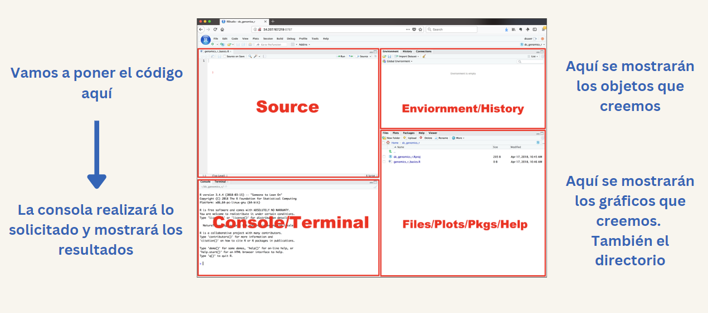
1.8 Objetos básicos en R
En R, cualquier entidad que se cree y preserve en la memoria durante una sesión se llama objeto. Puede ser un número, un texto, un conjunto de datos, una función, un gráfico y así sucesivamente. Puedes almacenar datos en objetos y luego usarlos para cálculos o análisis. Para poder hacer ello, utilizamos el operador = o <- para asignar un valor a un objeto. Por ejemplo, podemos asignar el resultado de una operación a un objeto:
# Asignar el valor 10 al objeto 'a'
a = 10
# Asignar el resultado de una suma al objeto 'b'
b <- 4 + 7Una vez que un objeto ha sido asignado, podemos utilizarlo en operaciones posteriores:
a[1] 10b[1] 11# Sumar las objetos 'a' y 'b'
a + b[1] 21Nombrar un objeto
Podemos declarar (nombrar) a un objeto como deseemos, pero su nombre no debe tener espacios. Por eso, a veces usamos guiones bajos (_) para conectar dos palabras, por ejemplo, mi_objeto o resultado_final.
suma_resultado = a + bsuma_resultado[1] 21Las objetos se almacenan en el entorno (environment) de R.
Funciones
Anteriormente mencionamos que R es un lenguaje de programación que nos permite comunicarnos con la computadora para que esta realice tareas utilizando nuestros datos (input) y nos devuelva un resultado (output). Para que estas tareas se lleven a cabo, primero debemos indicarle a la computadora cómo hacerlo, y estas indicaciones se dan a través de funciones. Las funciones son instrucciones representadas por palabras seguidas de paréntesis, que le dicen a R que ejecute una acción específica.
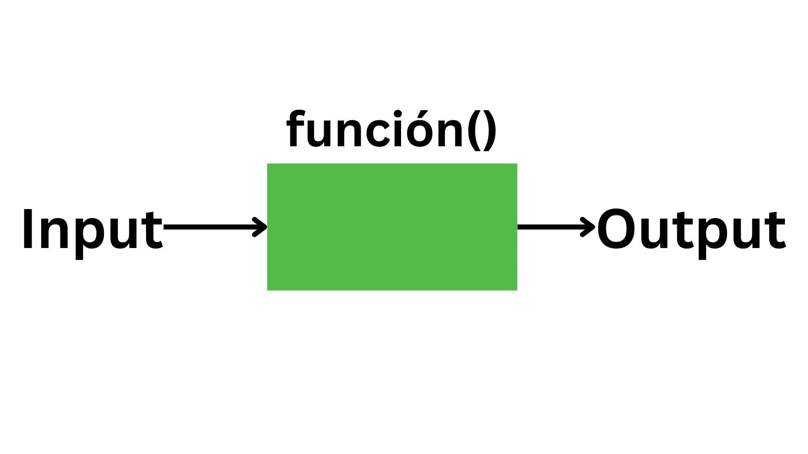
Las funciones en R pueden recibir argumentos (los valores que se colocan dentro del paréntesis). Estos argumentos pueden ser tanto los datos a procesar como instrucciones adicionales que le indican a la función cómo debe realizar la tarea.
Por ejemplo, la función sum() sirve para sumar múltiples valores.
# Sumar 10, 20 y 30
sum(10, 20, 30)[1] 60La función round() redondea un número, y podemos especificar cuántos decimales queremos conservar. Aquí, el primer argumento xes el número a redondear, y el segundo digits es una instrucción que indica cuántos decimales mantener.
round(x = 2.54934,
digits = 2)[1] 2.55En muchos casos, cuando se respetan el orden de los argumentos de la función, no es necesario declarar explícitamente sus nombres.
round(2.54934, 2)[1] 2.55Las funciones son fundamentales para trabajar en R, son la columna vertebral del lenguaje y nos permiten realizar tareas de todo tipo, desde cálculos simples hasta análisis complejos de datos. Muchas funciones ya vienen incluidas en R, pero otras han sido creadas por la comunidad y se encuentran en paquetes (que exploraremos más adelante).
| Categoría | Función | Descripción |
|---|---|---|
| Matemáticas y Estadísticas | ||
| Realizan cálculos matemáticos o análisis estadísticos sobre los datos. | sum() |
Suma todos los valores proporcionados. |
mean() |
Calcula el promedio de un conjunto de datos. | |
sd() |
Calcula la desviación estándar de un conjunto de datos. | |
round() |
Redondea un número al número de decimales especificado. | |
log() |
Calcula el logaritmo de un número en la base especificada (por defecto, base e). |
| Manipulación de Datos | ||
| Estas funciones permiten estructurar, transformar y filtrar conjuntos de datos para su análisis. | length() |
Devuelve la longitud de un vector o lista. |
head() |
Muestra las primeras filas de un conjunto de datos. | |
tail() |
Muestra las últimas filas de un conjunto de datos. | |
subset() |
Extrae subconjuntos de datos según una condición especificada. | |
merge() |
Combina dos conjuntos de datos en función de una clave común. |
| Visualización | ||
| Ayudan a crear gráficos y representaciones visuales de los datos para facilitar su interpretación. | plot() |
Crea gráficos básicos a partir de datos. |
hist() |
Genera un histograma para datos continuos. | |
boxplot() |
Crea un diagrama de caja para representar la dispersión de los datos. | |
barplot() |
Genera un gráfico de barras. |
| Control de Flujo | ||
| Permiten estructurar el código para que se ejecute en función de condiciones específicas. | if() |
Ejecuta una acción si se cumple una condición. |
else() |
Proporciona una alternativa cuando la condición de if no se cumple. |
|
for() |
Itera a través de una secuencia y ejecuta una acción para cada elemento. | |
while() |
Repite una acción mientras se cumpla una condición. |
| Entrada/Salida | ||
| Facilitan leer datos de archivos y guardar los resultados en diversos formatos. | read.csv() |
Lee datos desde un archivo CSV y los convierte en un marco de datos. |
write.csv() |
Guarda un marco de datos en un archivo CSV. | |
readRDS() |
Carga datos guardados en formato RDS. | |
saveRDS() |
Guarda datos en formato RDS. |
| Modelado Estadístico | ||
| Permiten ajustar modelos y realizar análisis estadísticos avanzados. | lm() |
Ajusta modelos lineales simples o múltiples. |
glm() |
Ajusta modelos lineales generalizados. | |
summary() |
Proporciona un resumen estadístico de un modelo o conjunto de datos. |
| Transformación de Texto | ||
| Ayudan a operar sobre cadenas de texto, como combinarlas, dividirlas o cambiar su formato. | paste() |
Combina varias cadenas de texto en una sola. |
strsplit() |
Divide una cadena en partes según un separador. | |
toupper() |
Convierte texto a mayúsculas. | |
tolower() |
Convierte texto a minúsculas. |
| Trabajo con Fechas | ||
| Facilitan trabajar con datos que incluyen fechas y horas. | Sys.Date() |
Devuelve la fecha actual del sistema. |
as.Date() |
Convierte datos en formato de fecha. | |
difftime() |
Calcula la diferencia entre dos fechas. |
1.9 Exploración inicial y manejo de librerías
Paquetes
En R, muchas de las cosas que queremos hacer se pueden realizar con “paquetes”. En R, un paquete es generalmente un conjunto de herramientas con funciones específicas para realizar tareas específicas. Existen paquetes para prácticamente todo. Por ejemplo, el paquete dplyr es un paquete ampliamente utilizado para la manipulación de datos como filtrar valores o crear nuevas columnas.
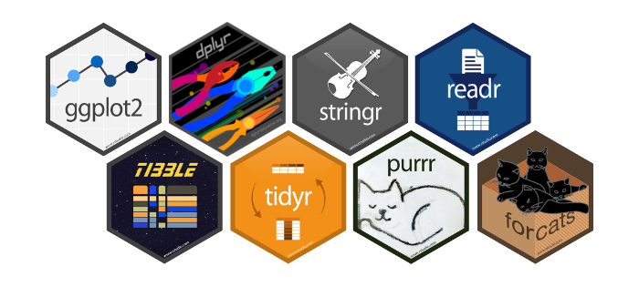
Instalar un paquete
Me gusta pensar que instalar un paquete en R es similar a ir a la tienda y comprar una caja de herramientas. Después de comprarla, la mueves a tu propio almacén para asegurarte de que la tendrás cuando la necesites. Esto solo necesita hacerse una vez por paquete, a menos que quieras actualizarlo (tener la última versión).
Con R, instalamos un paquete con una función llamada install.packages() seguida del nombre del paquete entre comillas.
install.packages('dplyr')Cargar un paquete
Cuando cargas un paquete en R, es como si sacaras la caja de herramientas del almacén y la pusieras en tu mesa de trabajo. Solo entonces las herramientas dentro de la caja te son accesibles para tus proyectos. Haces esto cada vez que comienzas un nuevo documento o una sesión de R.
Para hacerlo, usamos la función library().
library(dplyr)Usar una función sin cargar el paquete
Puedes lograr esto con :: si quieres usar una función completa de otro paquete, pero no quieres cargar el paquete completo. Esto es como sacar una herramienta específica de la caja, pero no poner toda la caja en tu mesa de trabajo.
Por ejemplo, el paquete psych tiene una función describe que produce un resumen estadístico detallado de un conjunto de datos dado. Si queremos aplicarlo en un conjunto de datos predeterminado en R como iris, podemos hacerlo sin cargar todo psych:
# Usar la función describe del paquete psych con el conjunto de datos iris
psych::describe(iris)psych::describe(iris) vars n mean sd median trimmed mad min max range skew
Sepal.Length 1 150 5.84 0.83 5.80 5.81 1.04 4.3 7.9 3.6 0.31
Sepal.Width 2 150 3.06 0.44 3.00 3.04 0.44 2.0 4.4 2.4 0.31
Petal.Length 3 150 3.76 1.77 4.35 3.76 1.85 1.0 6.9 5.9 -0.27
Petal.Width 4 150 1.20 0.76 1.30 1.18 1.04 0.1 2.5 2.4 -0.10
Species* 5 150 2.00 0.82 2.00 2.00 1.48 1.0 3.0 2.0 0.00
kurtosis se
Sepal.Length -0.61 0.07
Sepal.Width 0.14 0.04
Petal.Length -1.42 0.14
Petal.Width -1.36 0.06
Species* -1.52 0.07En resumen:
Instalación del paquete: se realiza una sola vez mediante
install.packages(), lo que permite que el paquete quede almacenado en el sistema y disponible para futuras sesiones.Carga del paquete: se efectúa en cada sesión con
library(), colocando el paquete en el entorno de trabajo y habilitando todas sus funciones para su uso directo.Uso puntual de una función: puede realizarse mediante el operador
::, que permite acceder a una función específica del paquete sin necesidad de cargarlo completamente.
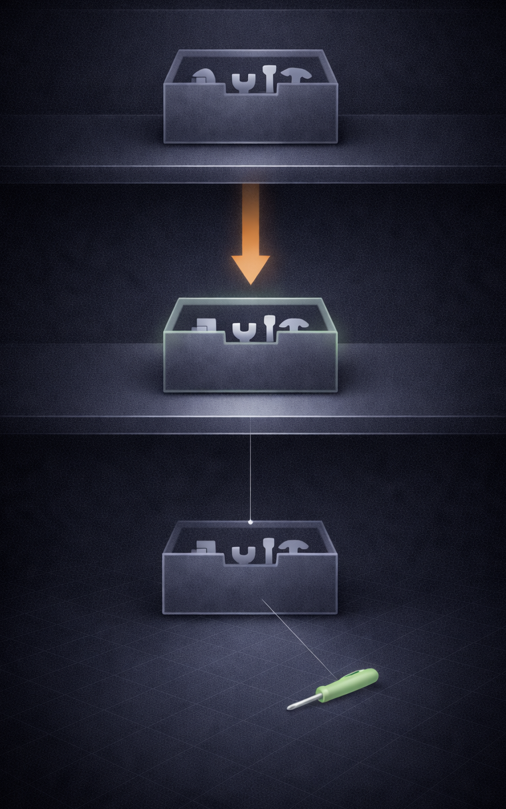
Elementos
En R, los elementos son las unidades básicas que componen los datos. Estos elementos tienen un tipo de dato que define su naturaleza, cómo pueden manipularse y las operaciones que pueden realizarse con ellos. Los tipos de elementos en R están directamente relacionados con los tipos de variables utilizados en análisis estadístico que vimos en el capítulo anterior, como variables numéricas (continuas y discretas), categóricas (nominales y ordinales) y lógicas (binarias).
a. Logical (Lógicos)
- Representan valores binarios:
TRUEoFALSE. - Asociados a variables dicotómicas en estadística.
x = TRUE
y = FALSEx[1] TRUEy[1] FALSEb. Integer (Enteros)
- Representan números enteros, como conteos o cantidades.
- Se definen agregando una “L” después del número.
x = 42L
y = -3Lx[1] 42y[1] -3c. Numeric (Numéricos)
- Representan números decimales o reales, como medidas continuas.
- Incluyen valores positivos, negativos y fracciones.
x = 7.85
y = -23.2x[1] 7.85y[1] -23.2d. Character (Cadenas de Texto)
- Representan texto o cadenas de caracteres.
- Utilizados para datos categóricos o nominales.
x = "Peru"
y = "Colombia"x[1] "Peru"y[1] "Colombia"| Tipo de Variable | Definición | En R |
|---|---|---|
| Numéricas Continuas | Valores dentro de un rango continuo, como altura, peso, temperatura. | Numeric: Representa decimales o reales. |
| Numéricas Discretas | Valores enteros que representan conteos, como número de personas o hijos. | Integer: Representa números enteros, sin decimales. |
| Categóricas Nominales | Categorías sin un orden inherente, como colores o géneros. | Character: Representa texto (e.g., “rojo”, “azul”). |
| Categóricas Ordinales | Categorías con un orden lógico, como niveles educativos (bajo, medio, alto). | Character o Factor: Puede usarse texto, aunque los factores facilitan el orden. |
| Variables Lógicas (Binarias) | Solo dos valores posibles, como sí o no, aprobado o reprobado. |
Logical: Representa valores TRUE o FALSE. |
Por ejemplo:
Creamos distintos tipos de objetos
num = 3.5
logic = FALSE
chr = "Peru"Los podemos mostrar con solo llamar el nombre de la objeto:
num[1] 3.5logic[1] FALSEchr[1] "Peru"Una forma muy práctica de asegurarnos qué tipo de elemento es la objeto es llamar a la función class(), simplemente tomando como argumento el nombre del objeto:
class(num)[1] "numeric"Hagámoslo para el resto:
class(logic)[1] "logical"class(chr)[1] "character"1.10 Objetos elementales
Una vez establecido que un elemento se refiere al tipo de dato en sí mismo (como numérico, lógico o de caracteres). Nos centraremos en los vectores y dataframes.
Vectores
- Son una secuencia de elementos del mismo tipo.
- Pueden ser de tipo numérico, lógico, o de caracteres.
- Se pueden crear utilizando la función
c().
numeros = c(1, 2, 3, 4, 5)
letras = c("a", "b", "c", "d", "e")numeros[1] 1 2 3 4 5letras[1] "a" "b" "c" "d" "e"Data.frames
Cuando recolectamos o hacemos uso de conjuntos de datos, estos suelen estar almacenados en estructuras tabulares, lo que facilita su comprensión y análisis. Una estructura tabular se refiere a una organización de los datos donde cada columna representa una variable (es decir, una característica o atributo que estamos observando), y cada fila corresponde a una observación (un registro individual de los datos, como un caso o instancia). En R, la forma más común de trabajar con este tipo de estructuras es a través de objetos denominados data.frames.
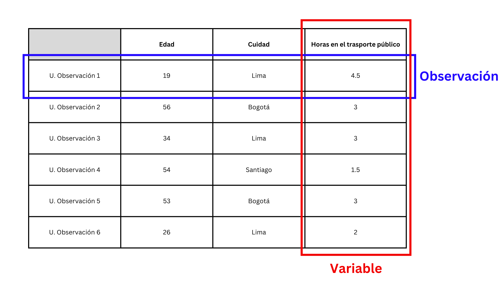
Imagina que queremos crear un conjunto de datos con tres variables:
- Edad: numérica, que representa la edad de los encuestados.
- Género: categórica, con valores como “Masculino” y “Femenino”.
- Medio de comunicación preferido: categórica, con valores como “Televisión”, “Radio”, “Internet” y “Prensa Escrita”.
Podemos construir este data.frame en R utilizando vectores para cada variable y luego combinándolos.
edad = c(25, 30, 35,
40, 28)
genero = c("Femenino", "Masculino",
"Femenino", "Masculino",
"Femenino")
medio_comunicacion = c("Internet", "Televisión",
"Radio", "Prensa Escrita",
"Internet")
# Combina los vectores en un data.frame
encuesta = data.frame(
edad = edad,
genero = genero,
med_com = medio_comunicacion
)encuesta edad genero med_com
1 25 Femenino Internet
2 30 Masculino Televisión
3 35 Femenino Radio
4 40 Masculino Prensa Escrita
5 28 Femenino InternetAdemás, peudes seleccionar una columna de data.frame de forma individual utilizando el signo $
encuesta$edad[1] 25 30 35 40 28encuesta$genero[1] "Femenino" "Masculino" "Femenino" "Masculino" "Femenino" encuesta$med_com[1] "Internet" "Televisión" "Radio" "Prensa Escrita"
[5] "Internet" 1.11 Importación y resumen
Importación
El formato CSV (Comma-Separated Values) es uno de los más utilizados debido a su simplicidad y compatibilidad. Cada fila en un archivo CSV representa una observación, y los valores dentro de cada fila están separados por comas.
Un ejemplo de cómo podría lucir un archivo CSV:
ID,Edad,Género,Ingreso
1,25,Femenino,1500
2,30,Masculino,2000
3,45,Femenino,2500El paquete readr es parte del tidyverse y está diseñado para leer archivos CSV.
# Cargamos el paquete readr
library(readr)Al importar un conjunto de datos debemos nombrarlo.
# Importamos el archivo CSV y lo asignamos a un objeto
encuesta_csv = read_csv("encuesta.csv")encuesta_csv# A tibble: 8 × 3
genero medio_comunicación edad
<chr> <chr> <dbl>
1 Masculino Televisión 34
2 Femenino Redes sociales 25
3 Femenino Redes sociales 55
4 Otro Radio 63
5 Femenino Televisión 47
6 Masculino Redes sociales 19
7 Masculino Redes sociales 29
8 Masculino Periódico 75Los archivos de Excel son comunes debido a su facilidad de uso y capacidad para almacenar datos tabulares en varias hojas. El paquete readxl permite importar estos archivos, ya sea en formato .xls o .xlsx, sin necesidad de tener Excel instalado.
# Cargamos el paquete readxl
library(readxl)# Importamos los datos desde un archivo Excel
encuesta_excel = read_excel("encuesta.xlsx")Si el archivo contiene múltiples hojas, podemos especificar cuál importar utilizando el argumento sheet:
encuesta_excel_hoja = read_excel("encuesta.xlsx",
sheet = "Resultados")Funciones resumen
Una vez que hemos importado los datos a R, es fundamental conocer su estructura y contenido antes de proceder con el análisis. Para ello, podemos utilizar una variedad de funciones resumen que nos permiten explorar el tibble y obtener información importante sobre las variables y los datos contenidos allí.
str() es una función base que describe la estructura del objeto, incluyendo el número de observaciones, las variables y sus tipos.
# Información estructural básica del tibble
str(encuesta_csv)spc_tbl_ [8 × 3] (S3: spec_tbl_df/tbl_df/tbl/data.frame)
$ genero : chr [1:8] "Masculino" "Femenino" "Femenino" "Otro" ...
$ medio_comunicación: chr [1:8] "Televisión" "Redes sociales" "Redes sociales" "Radio" ...
$ edad : num [1:8] 34 25 55 63 47 19 29 75
- attr(*, "spec")=
.. cols(
.. genero = col_character(),
.. medio_comunicación = col_character(),
.. edad = col_double()
.. )
- attr(*, "problems")=<externalptr> glimpse() es una función del tidyverse que proporciona una vista compacta del tibble, mostrando los nombres de las variables, sus tipos de datos y una muestra de valores.
# Cargamos el paquete tibble
library(tibble)
# Exploramos la estructura general del tibble
glimpse(encuesta_csv)Rows: 8
Columns: 3
$ genero <chr> "Masculino", "Femenino", "Femenino", "Otro", "Femen…
$ medio_comunicación <chr> "Televisión", "Redes sociales", "Redes sociales", "…
$ edad <dbl> 34, 25, 55, 63, 47, 19, 29, 75summary() proporciona estadísticas descriptivas básicas para cada columna, como mínimos, máximos, medias, medianas y conteos de valores para variables categóricas. De especial utilidad para el próximo capítulo.
# Resumen estadístico de las variables
summary(encuesta_csv) genero medio_comunicación edad
Length:8 Length:8 Min. :19.00
Class :character Class :character 1st Qu.:28.00
Mode :character Mode :character Median :40.50
Mean :43.38
3rd Qu.:57.00
Max. :75.00 head() muestra las primeras filas del tibble, permitiendo observar una muestra inicial de los datos. Puedes indicar cuanto valores deseas que devuelva especificando el segundo argumento, por defecto son seis.
# Visualizamos las primeras seis filas
head(encuesta_csv)# A tibble: 6 × 3
genero medio_comunicación edad
<chr> <chr> <dbl>
1 Masculino Televisión 34
2 Femenino Redes sociales 25
3 Femenino Redes sociales 55
4 Otro Radio 63
5 Femenino Televisión 47
6 Masculino Redes sociales 19# Visualizamos las primeras dos filas
head(encuesta_csv, 2)# A tibble: 2 × 3
genero medio_comunicación edad
<chr> <chr> <dbl>
1 Masculino Televisión 34
2 Femenino Redes sociales 25tail() es similar a head(), pero muestra las últimas filas del tibble.
# Visualizamos las últimas seis filas
tail(encuesta_csv)# A tibble: 6 × 3
genero medio_comunicación edad
<chr> <chr> <dbl>
1 Femenino Redes sociales 55
2 Otro Radio 63
3 Femenino Televisión 47
4 Masculino Redes sociales 19
5 Masculino Redes sociales 29
6 Masculino Periódico 75# Visualizamos las últimas dos filas
tail(encuesta_csv, 2)# A tibble: 2 × 3
genero medio_comunicación edad
<chr> <chr> <dbl>
1 Masculino Redes sociales 29
2 Masculino Periódico 75dim() devuelve las dimensiones del tibble, es decir, el número total de filas y columnas.
# Verificamos las dimensiones del tibble
dim(encuesta_csv)[1] 8 3colnames() muestra los nombres de las columnas (variables) del tibble
# Consultamos los nombres de las columnas
colnames(encuesta_csv)[1] "genero" "medio_comunicación" "edad" 1.12 Ejercicios de la semana
Ejercicio 1. Tipos de variables y estructura de los datos
Se cuenta con la siguiente información recolectada en una encuesta:
Edad de la persona
Sexo
Región de residencia
Nivel educativo
Situación laboral
a) Identifique la unidad de observación del estudio.
b) Clasifique cada variable según su tipo estadístico (numérica continua, numérica discreta, categórica nominal u ordinal).
c) Indique qué tipo de objeto de R es más adecuado para almacenar este conjunto de datos y justifique su respuesta.
a) Unidad de observación
. . .
La unidad de observación es cada persona encuestada.
b) Tipo de variables
Edad: variable numérica (típicamente tratada como continua, aunque se registre en enteros).
Sexo: variable categórica nominal.
Región: variable categórica nominal.
Nivel educativo: variable categórica ordinal (existe un orden natural: secundaria < técnica < universitaria).
Situación laboral: variable categórica nominal (ocupado, desocupado, estudiante, etc.).
c) Objeto más adecuado en R
. . .
Un data.frame, porque organiza la información en forma tabular:
filas = observaciones (personas)
columnas = variables (edad, sexo, región, etc.)
Ejercicio 2. Construcción de un data.frame en R
Cree en R un data.frame llamado encuesta que contenga información de al menos 8 personas, incluyendo las siguientes variables:
edad
sexo
region
educacion
a) Muestre el contenido del objeto.
b) Extraiga únicamente la variable edad utilizando el operador $.
c) Verifique el tipo de cada variable usando la función class().
a) Muestre el contenido del objeto.
. . .
edad = c(25, 30, 19, 42, 28, 35, 40, 23)
sexo = c("Mujer", "Hombre", "Mujer", "Hombre", "Mujer", "Hombre", "Hombre", "Mujer")
region = c("Lima", "Cusco", "Lima", "Piura", "Arequipa", "Lima", "Cusco", "Piura")
educacion = c(
"Universitaria", "Técnica", "Secundaria", "Universitaria",
"Técnica", "Universitaria", "Secundaria", "Universitaria"
)
encuesta = data.frame(
edad = edad,
sexo = sexo,
region = region,
educacion = educacion
)
encuesta edad sexo region educacion
1 25 Mujer Lima Universitaria
2 30 Hombre Cusco Técnica
3 19 Mujer Lima Secundaria
4 42 Hombre Piura Universitaria
5 28 Mujer Arequipa Técnica
6 35 Hombre Lima Universitaria
7 40 Hombre Cusco Secundaria
8 23 Mujer Piura Universitariab) Extraer edad con $
. . .
encuesta$edad[1] 25 30 19 42 28 35 40 23c) Verificar tipos con class()
. . .
class(encuesta$edad)[1] "numeric"class(encuesta$sexo)[1] "character"class(encuesta$region)[1] "character"class(encuesta$educacion)[1] "character"Ejercicio 3. Exploración inicial de los datos
Utilizando el data.frame creado en el ejercicio anterior:
a) Explore la estructura del conjunto de datos.
b) Obtenga un resumen numérico de sus variables.
c) Muestre los primeros 3 valores
a) Explore la estructura del conjunto de datos
. . .
str(encuesta)'data.frame': 8 obs. of 4 variables:
$ edad : num 25 30 19 42 28 35 40 23
$ sexo : chr "Mujer" "Hombre" "Mujer" "Hombre" ...
$ region : chr "Lima" "Cusco" "Lima" "Piura" ...
$ educacion: chr "Universitaria" "Técnica" "Secundaria" "Universitaria" .... . .
dplyr::glimpse(encuesta)Rows: 8
Columns: 4
$ edad <dbl> 25, 30, 19, 42, 28, 35, 40, 23
$ sexo <chr> "Mujer", "Hombre", "Mujer", "Hombre", "Mujer", "Hombre", "Ho…
$ region <chr> "Lima", "Cusco", "Lima", "Piura", "Arequipa", "Lima", "Cusco…
$ educacion <chr> "Universitaria", "Técnica", "Secundaria", "Universitaria", "…b) Obtenga un resumen numérico de sus variables
. . .
summary(encuesta) edad sexo region educacion
Min. :19.00 Length:8 Length:8 Length:8
1st Qu.:24.50 Class :character Class :character Class :character
Median :29.00 Mode :character Mode :character Mode :character
Mean :30.25
3rd Qu.:36.25
Max. :42.00 . . .
psych::describe(encuesta) vars n mean sd median trimmed mad min max range skew kurtosis
edad 1 8 30.25 8.17 29.0 30.25 8.90 19 42 23 0.16 -1.65
sexo* 2 8 1.50 0.53 1.5 1.50 0.74 1 2 1 0.00 -2.23
region* 3 8 2.75 1.04 3.0 2.75 1.48 1 4 3 -0.25 -1.38
educacion* 4 8 2.25 0.89 2.5 2.25 0.74 1 3 2 -0.40 -1.75
se
edad 2.89
sexo* 0.19
region* 0.37
educacion* 0.31dlookr::diagnose_numeric(encuesta) variables min Q1 mean median Q3 max zero minus outlier
1 edad 19 24.5 30.25 29 36.25 42 0 0 0dlookr::describe(encuesta)| described_variables | n | na | mean | sd | se_mean | IQR | skewness | kurtosis | p00 | p01 | p05 | p10 | p20 | p25 | p30 | p40 | p50 | p60 | p70 | p75 | p80 | p90 | p95 | p99 | p100 |
|---|---|---|---|---|---|---|---|---|---|---|---|---|---|---|---|---|---|---|---|---|---|---|---|---|---|
| edad | 8 | 0 | 30.25 | 8.17 | 2.89 | 11.75 | 0.24 | -1.2 | 19 | 19.28 | 20.4 | 21.8 | 23.8 | 24.5 | 25.3 | 27.4 | 29 | 31 | 34.5 | 36.25 | 38 | 40.6 | 41.3 | 41.86 | 42 |